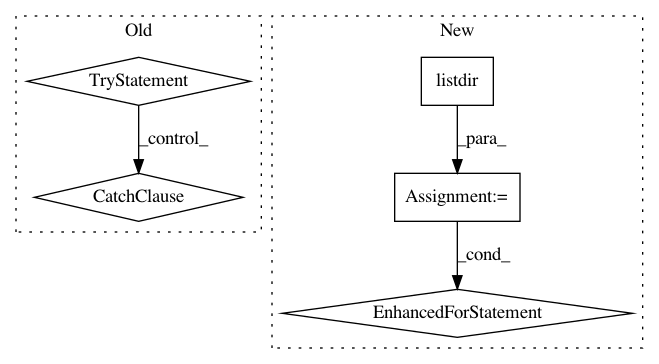

3e8c80ed9857631d6ce5d1adb35f451b9f780cb7,scanpy/examples/__init__.py,,get_example,#Any#Any#Any#,11
Before Change
exmodule : dict, optional
Example module.
try:
try:
from sys import path
path.insert(0, ".")
import scanpy_user
except ImportError:
sett.m(0, "--> did not find user examples, to provide some,\n"
" generate file scanpy_user.py in your working directory,\n"
" see https://github.com/theislab/scanpy//work-on-your-own-examples")
exfunc = getattr(scanpy_user, exkey)
exmodule = scanpy_user
except (UnboundLocalError, AttributeError):
try:
// additional possibility to add example module
from . import builtin_private
exfunc = getattr(builtin_private, exkey)
exmodule = builtin_private
except (ImportError, AttributeError):
try:
exfunc = getattr(builtin, exkey)
exmodule = builtin
except AttributeError:
msg = ("Do not know how to run example "" + exkey +
"".\nEither define a function " + exkey + "() "
"in ./scanpy_user.py that returns an AnnData object.\n"
"Or, use one of the builtin examples:"
+ exkeys_str())
from sys import exit
exit(msg)
from os.path import exists
exfile = readwrite.get_filename_from_key(sett.basekey)
if (not exists(exfile)
or sett.recompute in ["read", "pp"]):
After Change
exmodule : dict, optional
Example module.
loop_over_filenames = [filename for filename in os.listdir(".")
if filename.startswith("scanpy") and filename.endswith(".py")]
if len(loop_over_filenames):
sett.m(0, "--> did not find user examples, to provide some,\n"
" generate a file scanpy_whatevername.py in your working directory,\n"
" see https://github.com/theislab/scanpy//work-on-your-own-examples")
not_found = True
from sys import path
path.insert(0, ".")
for filename in loop_over_filenames:
exmodule = __import__(filename.replace(".py",""))
try:
exfunc = getattr(exmodule, exkey)
not_found = False
except AttributeError:
pass
if not_found:
try:
// additional possibility to add example module
from . import builtin_private
In pattern: SUPERPATTERN
Frequency: 3
Non-data size: 5
Instances
Project Name: theislab/scanpy
Commit Name: 3e8c80ed9857631d6ce5d1adb35f451b9f780cb7
Time: 2017-02-28
Author: f.alex.wolf@gmx.de
File Name: scanpy/examples/__init__.py
Class Name:
Method Name: get_example
Project Name: uber/ludwig
Commit Name: a1a6b7db4b2f751b6f6be9adfb452b200c9a3ee7
Time: 2020-09-20
Author: jimthompson5802@gmail.com
File Name: examples/titanic/simple_model_training.py
Class Name:
Method Name:
Project Name: philipperemy/deep-speaker
Commit Name: 93799ac3f4183b6dcd55cccf9655ae6e4c80849b
Time: 2017-12-02
Author: daniel-schreiber@gmx.de
File Name: utils.py
Class Name:
Method Name: create_dir_and_delete_content